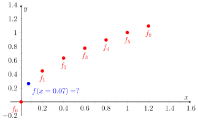

2.3. Gregory-Newton Interpolation Formulae#
2.3.1. The need for interpolation#
Question
Given a general sequence \(\left\{f_j\right\}_{j=-\infty}^{+\infty}\), if we know the value of each member \(f_j\), how can we find the value of \(f(x)\) for \(x_j < x < x_{j+1}\)?

Fig. 2.2 Sequence and interpolation.
Possiple options are:
Take an average: \(f(x)=\dfrac{f_j + f_{j+1}}{2}\)
A precise forward-shift: \(f(x)=\E ^{s} f_j\), \(0<s=\dfrac{x-x_j}{x_{j+1}-x_j}<1\)
For the first option, we may ask “Is this accurate?” For the second option, we may ask “How to SHIFT?”
2.3.2. Gregory-Newton Forward Interpolation#
Let \(f_j\) denote \(f(x_j)\). We wish to obtain an approximate value for \(f_{j+s}\), where:
Note that we have \(\,f_{j+s}=f(x_j\!+\!sh)=\E ^sf(x_j)=\E ^sf_j\,\).
To obtain a formula involving forward differences we substitute \(\,\E =1+\Delta\,\) therefore:
We need to work out \((1 + \Delta)^s=?\) Let’s look at the Binomial Expansion first
Note
where
So the shift operator can be expanded as
Note
\(\begin{pmatrix} s \\ k \end{pmatrix} = \dfrac{s!}{k!(s-k)!} =\dfrac{s(s-1)(s-2)\cdots(s-k+1)}{k!}\),
\(\begin{pmatrix} s \\ 0 \end{pmatrix} = \dfrac{s!}{0!(s-0)!}=1\).
Therefore, the forward Gregory-Newton Interpolation formulae is
This is an infinite series in \(s\) and in practice we terminate it after a finite number of terms \(k\). Thus, we can write:
where \(P_k(x_s)\) represents the polynomial, and \(e_k(x_s)\) is the error caused by terminating the series
Note
The G-N forward interpolation formula (polynomial) is useful for interpolating near the beginning of a sequence.
2.3.3. Gregory-Newton Backward Interpolation#
To find \(f(x)=f(x_j+sh)\) for \(x_{j-1}<x<x_j\), we can use backward shifting to derive the interpolation formula:
We can separate the whole polynomial into two parts:
Note
The G-N backward interpolation formula (polynomial) is useful for interpolating near the end of a sequence.